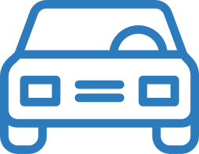
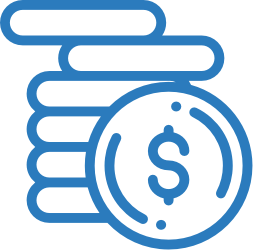

1000 Pitches believes that everyone has an idea worth expressing. We challenge U-M students to take the leap from noticing a problem to ideating solutions. Our competition collects pitches from mid-January through the end of February, which is when we storm campus with pitch booths and organize social media campaigns to engage with the best ideas at U-M. We collect, review, and provide feedback on thousands of pitches every year. We offer a grand prize of $1000 for the best pitch and a handful of other cash and non-cash prizes to other winning pitches.
Machine Learning
Mobility

Internet of Things
Healthcare
M-Provements
Fintech

Sustainability
Consumer Products